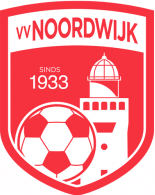
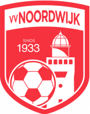

Over mij
Hallo, ik ben Francesco Mandas, 16 jaar oud, ik woon in Noordwijk. Ik houd van voetbal en speel in een vriendenteam van VV Noordwijk. We zijn er niet zo goed in, maar het is altijd erg leuk. Naast voetbal werk ik ook in de horeca omdat ik in de toekomst graag een eigen kroeg of café wil hebben. Ik werk momenteel bij Cafe Presso in de hoofdstraat en heb al veel over het vak geleerd. Ik breng ook regelmatig tijd door met mijn hond en mijn oma, en ik probeer haar zo vaak mogelijk te bezoeken. Het is altijd leuk om haar te bezoeken, omdat we een diepe band hebben. Helaas woont een deel van mijn familie op het prachtige eiland Sardinië in Italië, dus ik zie ze niet allemaal zo vaak als ik zou willen. Ze wonen verspreid over het dorp Elmas en de nabijgelegen stad Cagliari. Ook al zijn we ver weg, we houden contact en koesteren de momenten die we tijdens onze vakantie mogen bezoeken. Sardinië voelt echt als een tweede thuis.
Mijn school
Het Vlietland College in Leiden is een middelbare school met MAVO-, HAVO- en VWO- leerlingen. Het is een school die bekend staat om de persoonlijke sfeer en het feit dat je docenten je goed kennen. Het is niet alleen een plek om te studeren voor examens, het is een plek waar je zowel academisch als persoonlijk kunt groeien. Ook de docenten zijn actief betrokken, dus als je problemen ondervindt, helpen ze je graag verder. Het mooie aan het Vlietland is dat er sterk de nadruk wordt gelegd op extra activiteiten buiten de les, zoals: Excursies, sportdagen, culturele reizen. We leren niet alleen uit boeken, maar ook uit gedeelde ervaringen. Daarnaast heeft de school een geweldige locatie in Leiden. Als je houdt van een school die echt voor je zorgt, en niet alleen voor cijfers, dan is het Vlietland College de plek voor jou.
Website
Dit is de eerste website die ik ooit maak. Deze website ga ik vertellen over het binair stelsel en hoe dat in elkaar zit. Ook ga ik het hebben over Kleurmodellen, Compressie en Bitmap en Vectorafbeeldingen.
 
